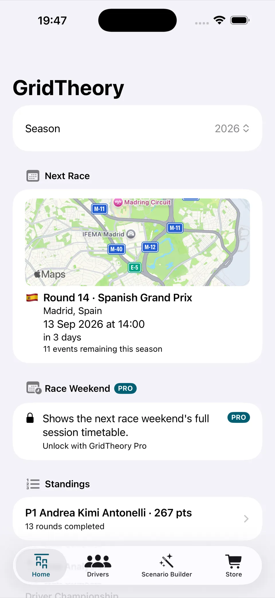
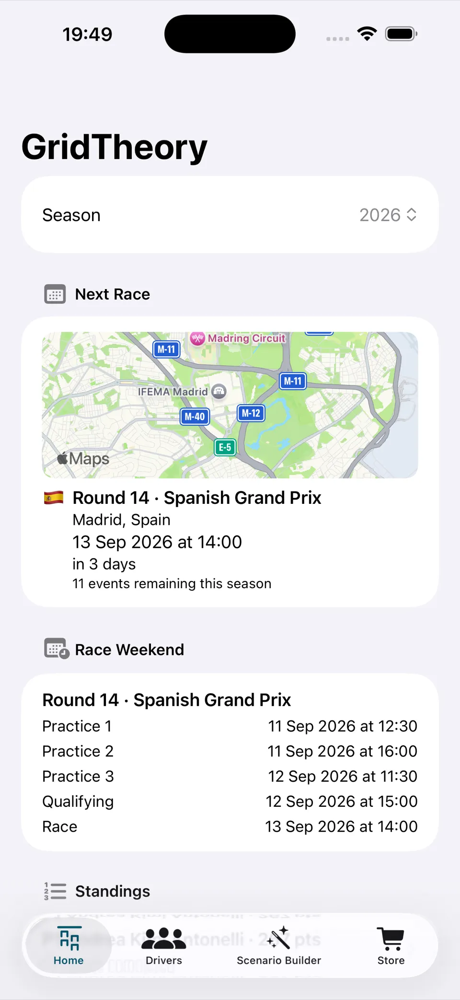
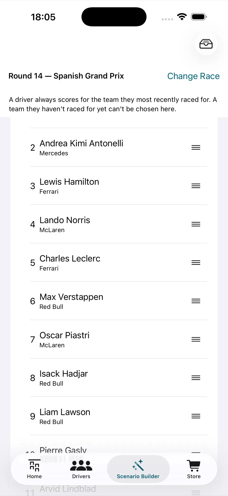
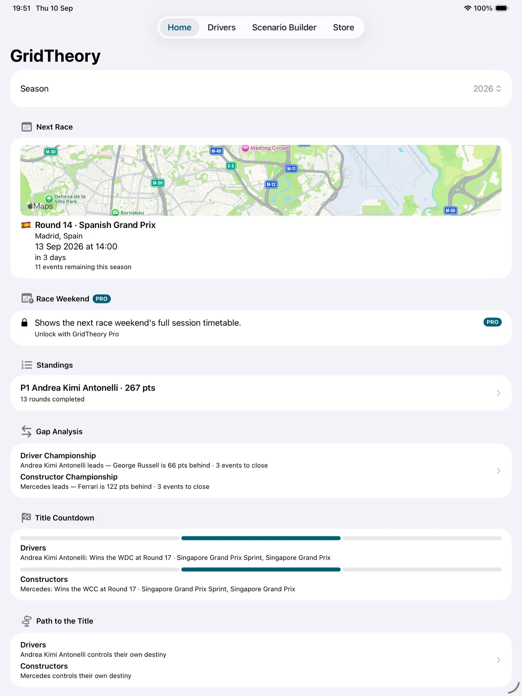
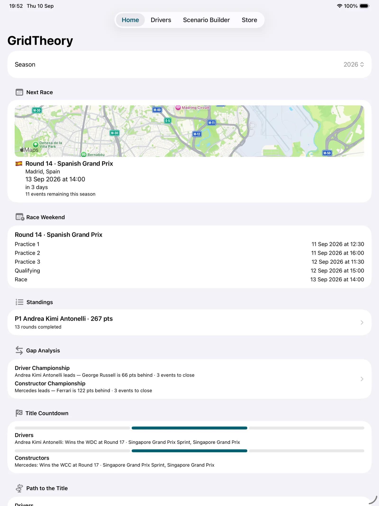

See the fight
Live standings, gap analysis, title countdowns, and paths to the championship show what the points actually mean.
Championship odds & scenarios
GridTheory turns the Formula 1 points table into clear answers: who is still alive, what they need, and how likely each outcome is.

A better way to follow a season
Live standings, gap analysis, title countdowns, and paths to the championship show what the points actually mean.
Simulate every remaining outcome up to 100,000 times on your phone. Estimates are labelled as simulated, never presented as predictions.
Change a result and watch the championship move. Build a scenario around the races that matter most.
See it in action




Built with restraint
GridTheory has no account, no advertising or analytics SDK, and no developer-run server. It only retrieves public race information and uses Apple services for purchases and map tiles.
Read the privacy policy